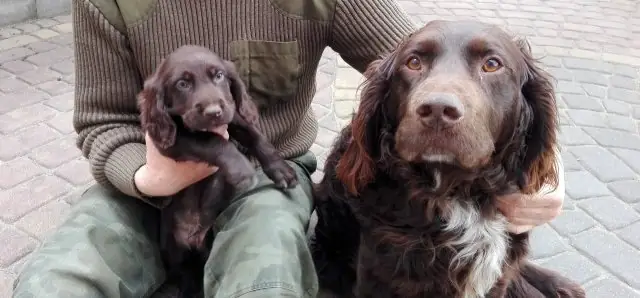
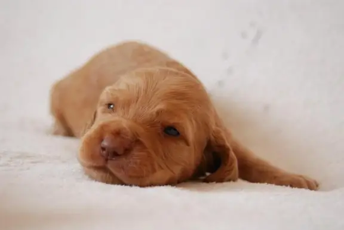
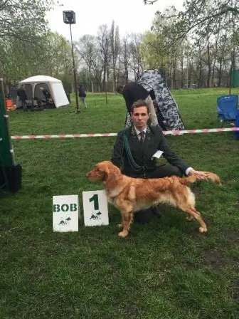

BAD z Kublovske Vsi
ChPL, MłChPL - czerwony, import z CzechPolecamy jako reproduktora. Krycie także za szczenię: 604 539 068.
Hodowla z Łabędziej 33 (FCI). Do hodowli bierzemy tylko psy i suki, które intensywnie polują i głoszą zgasłą zwierzynę.
Pierwszego wymarzonego wachtla mieliśmy w Mrągowie już pod koniec lat 80. Od tamtej pory hodujemy płochacze niemieckie z myślą o jednym: o psie, który pracuje w łowisku.
Wszystkie nasze szczenięta trafiły w ręce myśliwych, a wiele z nich potwierdziło swoje cechy użytkowe i eksterier na wystawach i konkursach pracy.
To już czwarte pokolenie płochaczy z naszym przydomkiem w linii żeńskiej. W każdym miocie jedna suczka dostaje imię z dopiskiem BITNA, na pamiątkę naszego pierwszego wachtla.

Do hodowli używamy tylko psów i suk, które intensywnie polują i głoszą na tropie (Spurlaut), a do tego spełniają nasze wymagania co do użytkowości i eksterieru. W naszej hodowli oboje rodzice szczeniąt muszą głosić zgasłą zwierzynę i tylko takie psy idą do dalszej hodowli.
„O każdej z tych suk, polowaniu z nimi, ich cechach użytkowych i perypetiach na wystawach i konkursach można napisać książkę.”z historii hodowli
Psy, które są teraz z nami w Mrągowie. Rodowody, oceny i wyniki prób pracy pokażemy na osobnej podstronie każdego psa.
Polecamy jako reproduktora. Krycie także za szczenię: 604 539 068.
Aktualnie w domu, w Mrągowie.
Aktualnie w domu, w Mrągowie.
Aktualnie w domu, w Mrągowie.
Obecnie w hodowli Remisit.
Mioty rejestrujemy w ZKwP. Szczenięta przechodzą przegląd miotu w olsztyńskim oddziale, są tatuowane i wyjeżdżają z metrykami.
Przed wyjazdem do nowych domów przechodzą u nas socjalizację, także tę obowiązkową, na kanapie.

Aporty, praca w polu i w wodzie, wystawy. Zdjęcia można przesuwać i powiększać.

Zbieramy archiwum o płochaczach niemieckich hodowanych kiedykolwiek w naszym województwie i pracujemy nad monografią, która będzie bezpłatnie dostępna w internecie.
Jeśli mają Państwo zdjęcia, dyplomy albo wspomnienia z hodowli czy wspólnych polowań, prosimy o wersję elektroniczną na labedzia33@wp.pl. Materiały przesłane pocztą odsyłamy po zrobieniu kopii.